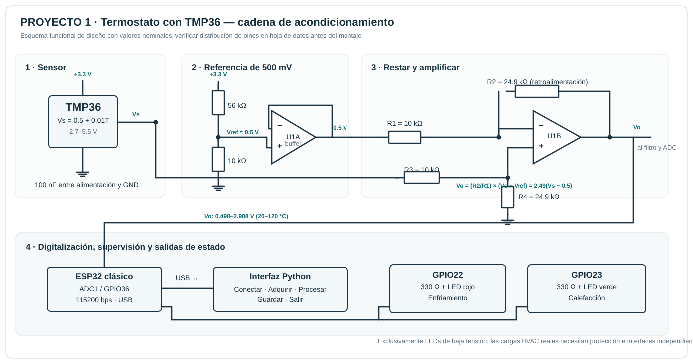

Termostato digital con TMP36 y ESP32
Diseño completo de una cadena de señal por amplitud de voltaje. Restar el offset de 500 mV, amplificar, digitalizar, supervisar y validar los estados de calefacción y enfriamiento con Python.
1. Objetivos y especificaciones
Desarrollar un termostato de laboratorio que mida temperatura de 20 a 120 °C, con objetivo de resolución 0.05 °C y una lectura por segundo. El estudiante fija límites inferior y superior desde Python. Si la temperatura cae por debajo del límite inferior, se activa el indicador de calefacción; si supera el límite superior, el de enfriamiento. En la zona intermedia, ambos se apagan.
Clase 1 · 120 minutos
Especificaciones, revisión del proyecto original, modelado de la cadena, diagrama de márgenes, cálculo del offset y la ganancia, circuitos de acondicionamiento y ensayo en simulación.
Clase 2 · 120 minutos
Montaje, verificación con multímetro, carga del firmware, interfaz Python, ensayo de estados y almacenamiento CSV. Reporte con resultados reales y comparación contra el modelo.
La resolución objetivo de 0.05 °C debe evaluarse experimentalmente. No significa que el sensor TMP36 tenga exactitud de 0.05 °C: su exactitud típica está en el orden de grados Celsius.
2. Fundamentos y modelo matemático
La presentación original se basa en el LM35. El TMP36 conserva la salida analógica proporcional a temperatura, pero añade un offset nominal de 500 mV. La adaptación realiza el desplazamiento de nivel antes de amplificar:
Para la alimentación de 3.3 V, la salida nominal va de 0.498 V a 2.988 V entre 20 y 120 °C. Esto da margen a los extremos, aunque debe verificarse el rango útil y la calibración del ADC en la placa física.
Distinción metrológica
La sensibilidad es de 10 mV/°C antes del acondicionamiento y de 24.9 mV/°C después. La resolución ideal del ADC es distinta de la precisión, la exactitud y la resolución experimental alcanzable.
Referencia de 500 mV
Una red de 56 kΩ y 10 kΩ alimentada con 3.3 V proporciona 0.5 V nominales. Se utiliza un seguidor para aislarla. Mida la referencia real y utilice ese valor al recuperar la temperatura en Python.
3. Circuito de acondicionamiento y conexiones
Se conserva el esquema conceptual del instrumento original: sensor analógico, referencia, amplificador diferencial, ADC del ESP32 y dos salidas digitales de aviso. Para el proyecto se propone un amplificador operacional dual MCP6002 alimentado a 3.3 V.

| Parte | Valor inicial | Comprobación |
|---|---|---|
| TMP36 | 3.3 V; capacitor de desacoplo de 100 nF | Confirmar el pinout del encapsulado adquirido |
| Referencia | 56 kΩ arriba / 10 kΩ abajo → 0.5 V nominal | Medir Vref real con DMM |
| U1A | Seguidor de voltaje de Vref | Medir 0.5 V aproximadamente a su salida |
| U1B | R1=R3=10 kΩ; R2=R4=24.9 kΩ | G nominal 2.49; revisar tolerancias |
| ESP32 | GPIO36 ADC1_CH0; GPIO22 LED rojo; GPIO23 LED verde | Dos resistencias de 330 Ω; GND común |
4. Simulador de cadena de señal y termostato
Modifique T, referencia y ganancia; observe cómo cambian Vs, V*, Vo y el código ADC ideal. Ajuste los límites y la histéresis para comprobar los tres estados. Los datos son cálculos nominales, no lecturas experimentales.
5. Diagrama de márgenes: complete etapa por etapa
Como en los problemas de la presentación original, complete los extremos mínimo y máximo antes de visualizar la solución. El simulador comprueba con una tolerancia numérica indicada al revelar cada etapa.
| Etapa | Expresión de diseño | 20 °C (mín.) | 120 °C (máx.) | Comprobación |
|---|
Diseño del ADC
Determinar el número de códigos requeridos a partir de 100 °C / 0.05 °C. Relacionar dicho requisito con el LSB ideal y analizar los márgenes reales de entrada del ADC.
Conversión inversa
A partir de un código y/o un voltaje registrado, recuperar Vo, Vs y T. Comparar los resultados utilizando parámetros teóricos y las medidas del circuito.
6. Integración y validación del prototipo
Firmware ESP32
Comandos por USB a 115200 bps: R (o 2) para adquirir; N apaga ambas salidas; F frío; C calor. Respuesta de lectura: DATA,código,mV. La vigilancia del firmware apaga ambas salidas al dejar de recibir comandos durante 3 segundos.
Interfaz Python
Controles principales Conectar, Adquirir, Procesar, Guardar y Salir, además de Detener. Permite establecer límites e histéresis, mostrar temperatura, voltajes y ADC, registrar CSV, graficar con ejes y calcular estadísticas.
Pruebas funcionales
| Escenario | Comportamiento esperado | Evidencia |
|---|---|---|
| Temperatura entre límites | Ambos LEDs apagados | Estado, fotografía, lectura |
| T < límite inferior | LED calefacción (GPIO23) encendido | Estado y medida de T |
| T > límite superior | LED enfriamiento (GPIO22) encendido | Estado y medida de T |
| Prueba de histéresis | Conmutación estable | Registro temporal |
| Detener o desconectar | Ambos LEDs apagados | Verificación física |
Registro de mediciones
Registre los resultados reales, sin sustituirlos por la simulación. Para cada punto anote temperatura de referencia y estimada; describa el error y las condiciones de la prueba.
7. Materiales y recursos descargables
Modelo, cálculo de márgenes, esquema, procedimientos, matriz de validación y evaluación.
Abrir guía PDFDescargar guíaConservada íntegra para estudiar la metodología de diseño con LM35; la ejecución actual se realiza con TMP36 y Python.
Abrir proyecto original (PDF)Descargar proyecto originalExposición y resolución del termostato del material original; para la implementación actual se utiliza TMP36 y Python.
Ver video en YouTubeADC GPIO36, LEDs GPIO22/23, UART, vigilancia de seguridad.
Descargar .inoTermostato configurable, modo simulación, serial y registros.
Descargar aplicación .pyModelo físico y máquina de estados verificables con Python.
Modelo PythonAutopruebas PythonDependencias, guía de uso, arranque en Windows y notebook.
requirements.txtIniciar en WindowsNotebookFuentes técnicas: Hoja de datos TMP36 (Analog Devices) y MCP6002 (Microchip).
8. Láminas seleccionadas de la presentación docente
La secuencia original permite seguir el mismo procedimiento: especificaciones, márgenes, offset, ganancia, diseño, programación y verificación.
9. Evidencias, autoevaluación y tutor IA
Entrega del proyecto
Modelo de la cadena, cálculo y diagrama de márgenes, circuito y fotografías, firmware, aplicación Python, CSV original, tabla comparativa contra referencia, ensayo de los tres estados, análisis de histéresis, discusión metrológica y conclusiones.
Rúbrica propuesta: diseño matemático 25 % · implementación y seguridad 25 % · integración ESP32–Python 20 % · validación 20 % · reporte 10 %.
Tutor de IA · preguntas orientadoras
Solicite al tutor que revise su tabla de márgenes, la correspondencia entre el circuito y las ecuaciones, la diferencia entre resolución y exactitud, y sus pruebas de histéresis. Muestre las medidas reales; el tutor no debe inventarlas.